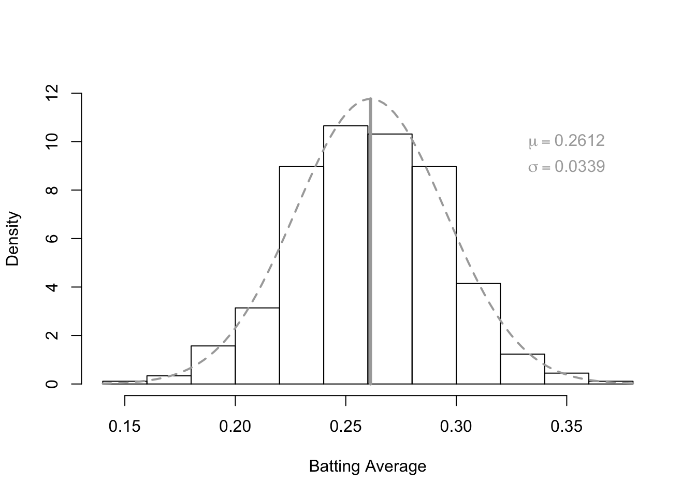
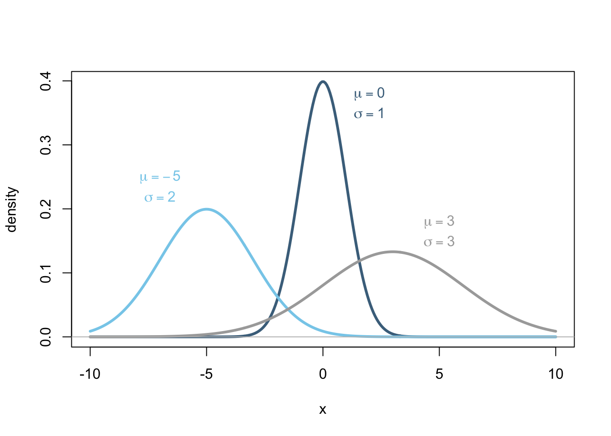
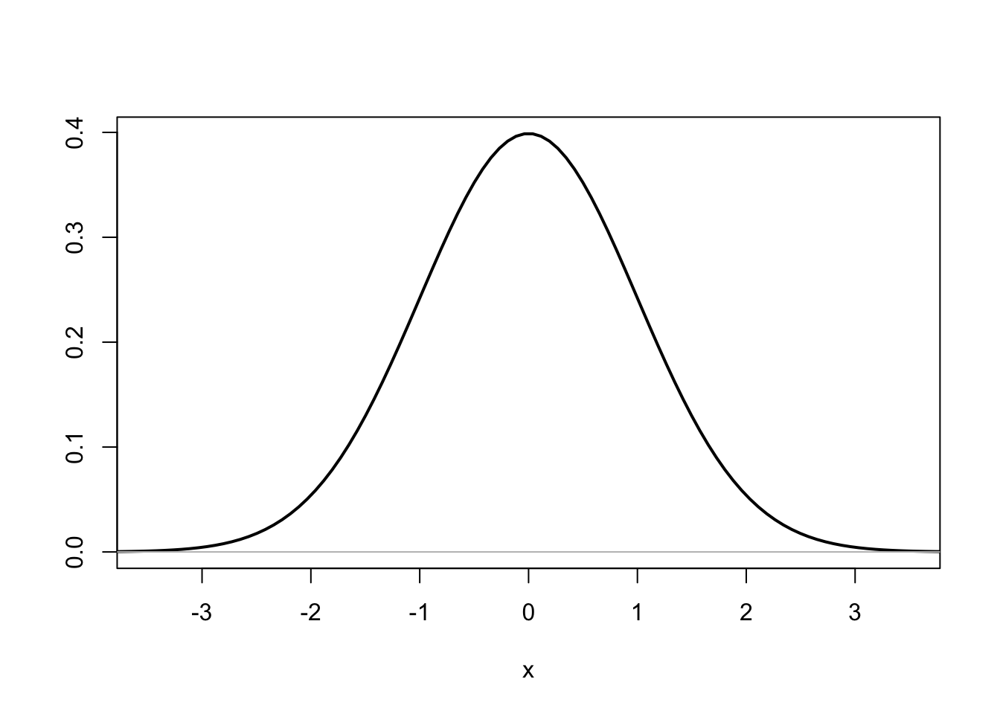
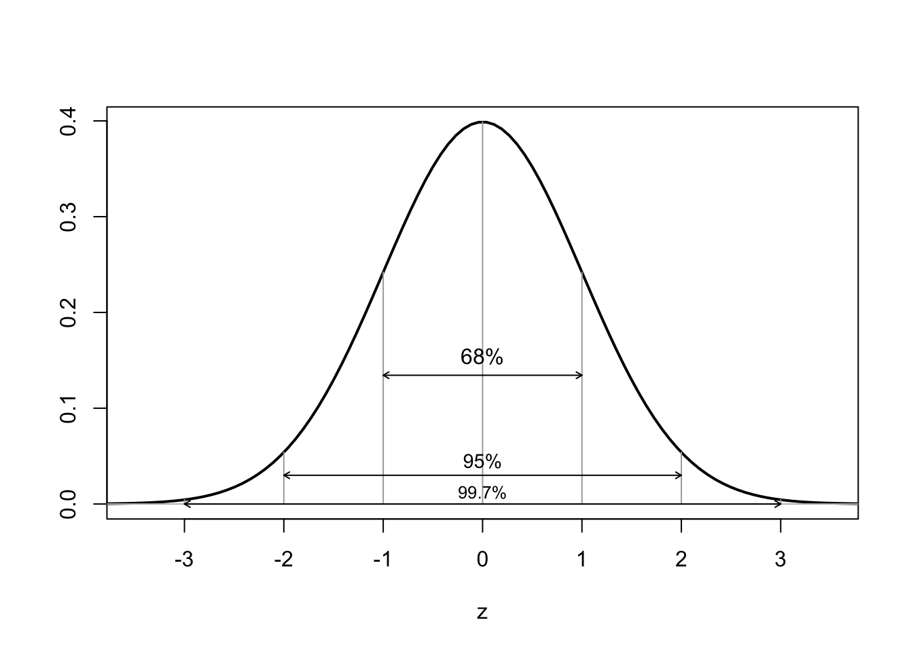
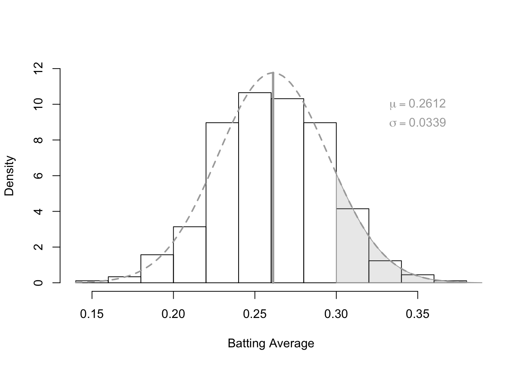
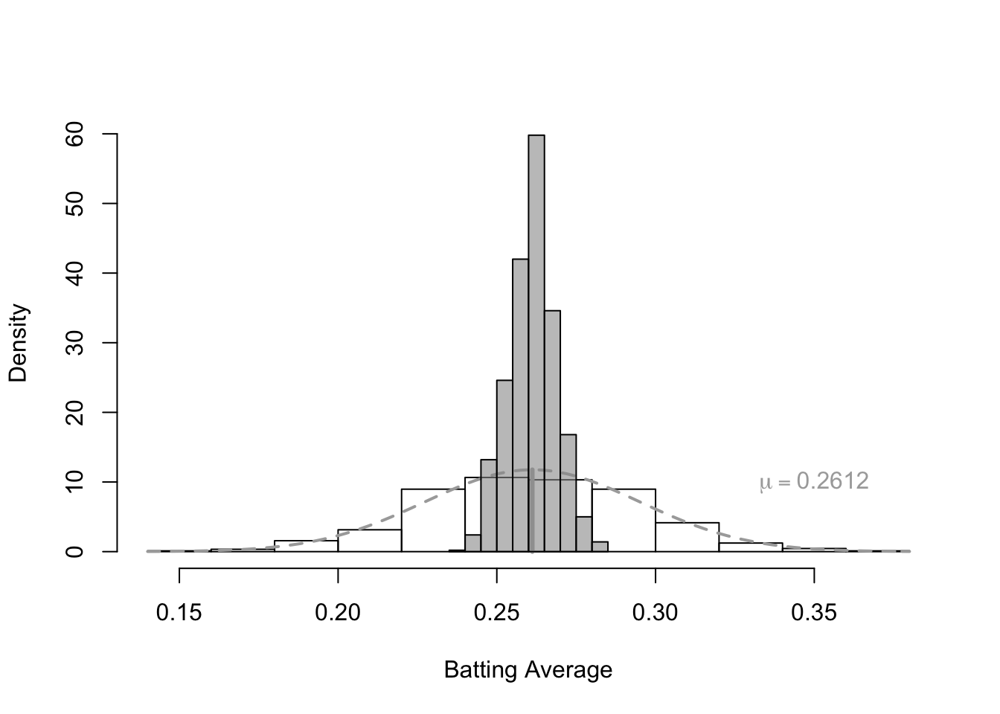

It is often the case that we can assume that data comes from a normal distribution. Heights of people, plants, or animals are typically normally distributed. The distribution of the lengths of pregnancies (gestational periods) are normally distributed for most species. For humans the average pregnancy is roughly “9 months,” or more specifically, 266 days. Measurement errors are often normally distributed. For example if a person was to be weighed on a scale 30 different times, the measurements of their weight would probably not always be the same, especially if the scale was accurate enough. Despite being different, most measurements would likely not differ too dramatically from each other. Some would be a little higher and some a little lower, but the majority of the data would likely be close to the center. This is what it means when data is normally distributed, that most of it is close to the mean, some a little higher and some a little lower.
To view a specific case, consider the following histogram of Major League Baseball batting averages (from 2009) which can be assumed to be normally distributed with a mean of \(\mu = 0.2612\) and a standard deviation of \(\sigma=0.0339\). There are two important elements to the histogram, which is overlaid with a normal density curve, that is shown below. First, the distribution of the actual data is shown by the histogram. This is what actually occurred. It is real and unarguable. Second, the normal density curve that is overlaid on this histogram is a mathematical (theoretical) function that does a pretty good job of summarizing, or generalizing, the distribution of the data. It is theoretical and therefore arguable. No one actually knows if batting averages are normally distributed or not. However, the approximation of the normal curve to the histogram looks very reasonable, so we go ahead and “claim” that batting averages are normally distributed.

The reason we often “claim” that data is normally distributed is to apply the powerful properties of the mathematical function known as the normal density curve, or normal distribution. The mathematical formula that describes this function was uncovered by many early mathematicians, but Carl Friedrich Gauss published it in 1809 and therefore is usually given credit for its discovery. The function, which is perhaps a little intimidating at first, is given by \[ f(x |\mu,\sigma) = \frac{1}{\sqrt{2\pi}\sigma}e^{-\frac{1}{2}\left(\frac{x-\mu}{\sigma}\right)^2} \] Familiarity with all the symbols should make this function less intimidating. The two parameters of this mathematical function are denoted by the Greek letters \(\mu\) and \(\sigma\). The symbol \(\pi\) is the Greek letter “pi” and is the famous constant, 3.14159… \(e\) is also a famous constant occurring in nature and is given by 2.71828…. How amazing is that to have \(\pi\) and \(e\) in the same formula! Finally, \(x\) is the value of \(x\) along the x-axis and goes from negative infinity \((-\infty)\) to positive infinity \((\infty)\). The answer of the right side after everything is filled in and calculated out is the height of the normal curve. The higher the normal curve above a certain value of \(x\), the more likely that value of \(x\) is to happen.
Notice how the parameter \(\mu\) controls the center of this distribution while the parameter \(\sigma\) controls how spread out the distribution is. When \(\sigma\) is larger, the resulting normal curve is flatter and more spread out (i.e., the data is more variable). When \(\sigma\) is smaller, the resulting normal curve is taller and less spread out (i.e., the data is less variable). In any case, the most likely values of \(x\) to occur are those that are close to \(\mu\). This is seen by noting that for any normal curve, it is tallest around its mean.

The above plot and discussion demonstrates that just two parameters completely describe the normal distribution, \(\mu\) and \(\sigma\). What is even more powerful about the normal distribution is that any normal distribution can be re-scaled to the standard normal distribution by using the following formula \[ Z = \frac{X-\mu}{\sigma} \] Thus, whatever the mean \((\mu)\) and standard deviation \((\sigma)\) of a certain normal distribution, we can transform it to the standard normal distribution which looks like this

The reason we would do this is because the standard normal distribution has the following property, roughly 68% of the data is within 1 standard deviation of the mean; roughly 95% of the data occurs within 2 standard deviations of the mean; and roughly 99.7% of the data occurs within 3 standard deviations of the mean. Thus, by 3 standard deviations, 997 of every 1,000 data points will have occurred. That means that fewer than 3 observations for every 1,000 will be more than three standard deviations from the mean if the data is truly normally distributed. This is shown graphically in the following plot.

Further, the probability of any region of the normal density function can be obtained by calculating the area under the curve for a specific range of \(x\)-values of interest.
Continuing with the previous example of batting averages, the probability that a randomly selected MLB player from 2009 has a batting average higher than 0.300 would be given by the shaded region in the plot below, which is 0.1262 (or 12.62%). In comparison, if we were to calculate the probability using our actual sample data, we would find that 0.1345 (or 13.45%) of the sample data was greater than or equal to 0.300. Thus the normal curve is a useful approximation to the actual sample data, but more importantly allows a generalization of the data to the full population. The question of interest thus becomes, how can the normal distribution be used to effectively make conclusions about the population based on the information provided by the sample?

One of the most powerful results in statistics is the conclusion that the theoretical distribution of all possible sample means, the sampling distribution of the sample mean, is normal under two important scenarios!
If the parent population data is normal, then the sampling distribution of the sample mean will be normal.
If the sample size is large enough, then the sampling distribution of the sample mean will be (at least approximately) normal.
If either of these above conditions is satisfied, then it follows that the distribution of the sample mean \((\bar{X})\) will be (at least approximately) normally distributed. Let’s explore what this means more specifically.
Here at BYU-Idaho there are roughly 7,500 male students (click here to see the actual data). If a random sample of size \(n=50\) male students is taken from the population of 7,500 individuals, how many different samples are possible? It turns out that the number that describes how many possible samples of size \(n=50\) can be taken from a population of 7,500 students has 130 digits in it! (The actual number is roughly 1.580873e+129.) This might be described as “a lot” of possible samples. For reference, note that the number “one million” has just 7 digits in it: 1,000,000 or 1.0e+6. Certainly it is possible that the sample gives us the 50 tallest males at BYU-Idaho. It is also possible that the sample consists of the shortest 50 males at BYU-Idaho. However, the fantastic result is that for the most part, most sample means will be “close” to the true population mean, with some being a little higher, and some being a little lower. In other words, the distribution of all theoretically possible sample means is normal.
To see this more clearly, let’s return to our batting averages example. As we saw previously, batting averages can be assumed to be normally distributed with a mean of 0.2612 and a standard deviation of 0.0339. To reach this conclusion we essentially looked at the data for the entire population. It would be nice if we could have reached this conclusion (or a nearly identical conclusion) using just a sample of say \(n=20\) batting averages. For the batting averages data, the population consists of 446 individual batting averages. It turns out that there are 2.587035e+34 possible samples of size 20 that could be obtained from a population of 446 individuals. That is a lot of possible samples. Let’s compute the sample mean for a few of these, say for 1,000 of the possible samples. The distribution of the 1,000 resulting sample means are plotted over top of the histogram for the actual batting average data. Notice that this new histogram is centered around the original value of \(\mu=0.2612\). In fact, the mean of the 1,000 sample means comes out to be \(\mu_{\bar{x}} = 0.26135\), which is very close to the actual mean \(\mu=0.2612\). If we do the same thing for 10,000 random samples, then \(\mu_{\bar{x}} = 0.26126\) and if we do it again for 20,000 samples we get \(\mu_{\bar{x}}=0.26123\). Notice that the larger the sample size gets, the closer that the mean of the sample means gets to the actual population mean. (Try saying that phrase out loud.) Thus we could say that “the mean of the means is the mean.”

The conclusion of the above discussion is that if we took a single random sample of \(n=20\) batting averages from the population of all batting averages, we would have ended up with an \(\bar{x}\) ranging anywhere from somewhere around 0.2406 to 0.2840. However, more likely than not, the value would have been something closer to the true value of \(\mu=0.2612\) than either of those numbers because the sample means are normally distributed around the population (true) mean.